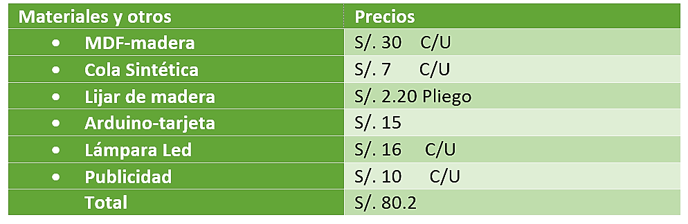
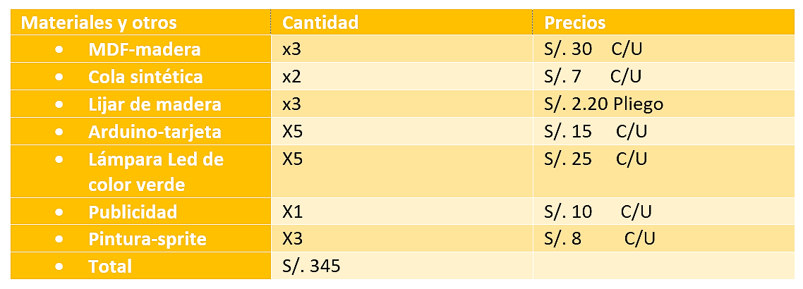

Definir
La información recolectada solo tiene utilidad al ser analizada. En esta etapa se deben filtrar todos los datos importantes para crear las conclusiones que guiarán el trabajo. Junto a esto, se especificarán los problemas que necesitan solución.





1.Primera Etapa: Raíz de la problemática
A)Causa :
•Nuestro cliente al igual una gran comunidad de videojuegos no puede tener adquisiciones físicas de sus juegos virtuales favoritos en este caso “Dota 2”.
B)Criterios:
•En nuestro medio no hay mucho conocimiento y manejo sobre los aparatos electrónicos como las tarjetas, microcontroladores o herramientas como las maquinas laser para poder realizar la materialización de objetos virtuales.
•Nuestro cliente solo llego a encontrar cosas pequeñas sobre su juego favorito como: un polo estampado, pulseras, etc.
•Nuestro usuario al igual que una gran cantidad de gamers (jugadores), prefieren objetos decorativos que puedan utilizarlo en su vida cotidiana.
C)Solución:
•Nuestro proyecto Artiplayer se enfoca en esta comunidad de jugadores, asiéndose presente mediante lámparas con ilustración de Dota 2.
D)Costo del proyecto: Prototipo (Imagen a la Izquierda)
Respuestas
En el presente documento se muestra las interfaces de la implementación de la aplicación a mano alzada , como también la descomposición funcional de cada interfaz.
Documento - RespuestasPrototipo
En el presente documento muestra la interfaz gráfica ya implementada de manera funcional tomando en cuenta las ideas propuestas por los alumnos.
Prototipo